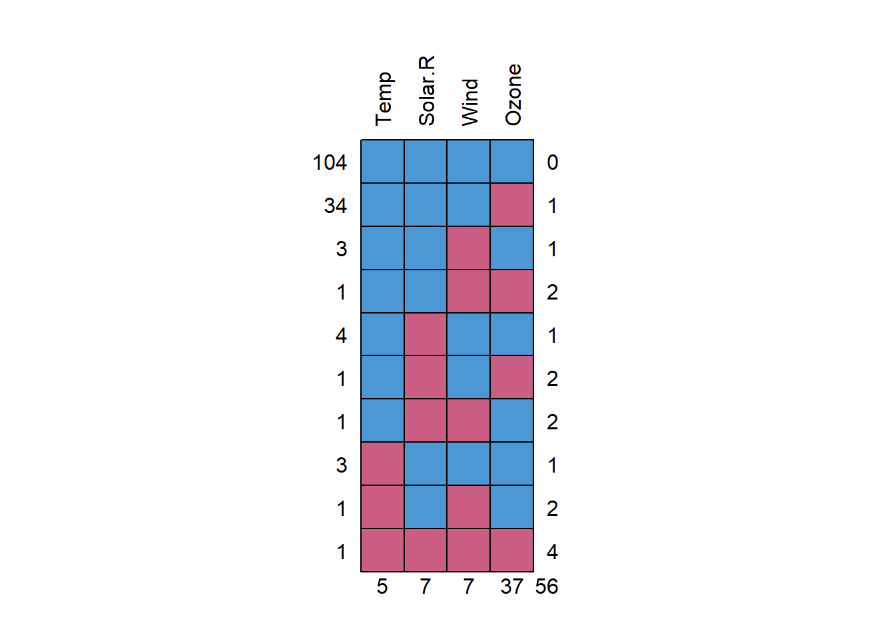

Visualización de Datos con R Sección 3
2021-10-25
Chapter 1 Modelo de series de tiempo
En esta sección estudiaremos la forma de implementar el modelo ARIMA estudiado antes en la sección de Python. La teoría abordada para este modelo es la misma, por lo tanto procedemos a la implementación en R de este modelo predictivo
1.1 Modelo ARIMA
El modelo de Media Móvil Integrada Autorregresiva
(ARIMA)es el nombre genérico de una familia de modelos predictivos que se basan en los procesos Autorregresivo(AR)y de Media Móvil(MA).Entre los modelos predictivos tradicionales (por ejemplo, la regresión lineal, suavización exponencial, etc.), el modelo
ARIMAse considera el enfoque más avanzado y robusto.En esta sección, presentaremos los componentes del modelo: los procesos
ARyMAy el componente de diferenciación. Además, nos centraremos en los métodos y enfoques para ajustar los parámetros del modelo con el uso de diferenciación, la función de autocorrelación(ACF)y la función de autocorrelación parcial(PACF).En esta sección cubriremos lo siguiente
- El estado estacionario de los datos de las series temporales
- El proceso random walk
- Los procesos
ARyMA - Los modelos
ARMAyARIMA - El modelo ARIMA estacional
Librerías:
forecastTSstudioplotlydplyrlubridatestatsdatasetsbase
1.2 El proceso estacionario
Uno de los principales supuestos de la familia de modelos
ARIMAes que las series de entrada siguen la estructura de un proceso estacionario. Este supuesto se basa en el Teorema de representación de Wold, que afirma que cualquier proceso estacionario puede representarse como una combinación lineal de ruido blanco.Por lo tanto, antes de sumergirnos en los componentes del modelo
ARIMA, vamos a detenernos a hablar del proceso estacionario. El proceso estacionario, en el contexto de los datos de las series temporales, describe un estado estocástico de la serie. Los datos de las series temporales son estacionarios si se dan las siguientes condiciones:- La media y la varianza de la serie no cambian con el tiempo
- La estructura de correlación de la serie, junto con sus rezagos, permanece igual a lo largo del tiempo tiempo
En los siguientes ejemplos, utilizaremos la función
arima.simdel paquetestatspara simular unos datos de series temporales estacionarios y no estacionarios y los representaremos con la funciónts_plotdel paqueteTSstudio. La funciónarima.simnos permite simular datos de series temporales basándonos en los componentes y características principales del modeloARIMA:- Un
proceso autorregresivo (AR): Establece una relación entre la serie y sus \(p\) rezagos pasados con el uso de un modelo de regresión - Un
proceso de media móvil (MA): Similar al procesoAR, el procesoMAestablece la relación con el término de error en el tiempo \(t\) y los términos de error pasados, con el uso de regresión entre los dos componentes
- Un
Proceso integrado (I): El proceso de diferenciar la serie con sus \(d\) rezagos para transformar la serie en un estado estacionario. Aquí, el argumento del modelo de la función define \(p, q\) y \(d\), así como el orden de los procesosAR, MA, y los procesosIdel modelo.Consideraríamos una serie temporal de datos como no estacionaria siempre que las condiciones mencionadas anteriormente no se cumplan. Los ejemplos más comunes de una serie con una estructura no estacionaria son los siguientes:
- Una serie con una tendencia dominante: La media de la serie cambia a lo largo del tiempo como función del cambio en la tendencia de la serie, y por tanto la serie es no estacionaria
- Una serie con un componente estacional multiplicativo: En este caso, la varianza de la serie es una función de la oscilación estacional a lo largo del tiempo, que aumenta o disminuye con el tiempo
La serie clásica
AirPassenger(el número mensual de pasajeros de las aerolíneas entre 1949 y 1960) del paquete de conjuntos de datos es un buen ejemplo de una serie que viola las dos condiciones del proceso estacionario. Dado que la serie tiene tanto una fuerte tendencia lineal como un estacional multiplicativo, tanto la media como la varianza cambian con el tiempo:
library(TSstudio)
data(AirPassengers)
ts_plot(AirPassengers,
title = "Monthly Airline Passenger Numbers 1949-1960",
Ytitle = "Thousands of Passengers",
Xtitle = "Year")1.3 Transformación de una serie no estacionaria en una serie serie estacionaria
- En la mayoría de los casos, a menos que tenga mucha suerte, sus datos brutos probablemente vendrán con una tendencia u otra forma de oscilación que viole los supuestos del proceso estacionario. Por lo tanto, para manejar esto, tendrá que aplicar algunos pasos de transformación con el fin de llevar la serie a un estado estacionario. Los métodos de transformación más comunes son la diferenciación la serie (o la des-tendencia) y la transformación logarítmica (o ambas). Repasemos las aplicaciones de estos métodos.
1.4 Diferenciación de series temporales
- El método más habitual para transformar los datos de una serie temporal no estacionaria en un estado estacionario es diferenciar la serie con sus rezagos. El principal efecto de diferenciar una serie es la eliminación de la tendencia de la serie (o la pérdida de tendencia de la serie), que ayuda a estabilizar la media de la serie. Medimos el grado u orden de diferenciación de la serie por el número de veces que diferenciamos la serie con sus rezagos. Por ejemplo, la siguiente ecuación define la diferencia de primer orden:
\[ Y_{t}'=Y_{t}-Y_{t-1} \]
- Aquí \(Y_{t}'\), representa la diferencia de primer orden de la serie, y \(Y_{t}, Y_{t-1}\) representan la serie y su primer rezago respectivamente. En algunos casos, el uso de la diferencia de primer orden no es suficiente para llevar la serie a un estado estacionario, y es posible que desee aplicar la diferencia de segundo orden:
\[ Y_{t}^{*}=Y_{t}^{'}-Y_{t-1}^{'}=(Y_{t}-Y_{t-1})-(Y_{t-1}-Y_{t-2})= Y_{t}-2Y_{t-1}+Y_{t-2} \] - Otra forma de diferenciación es la diferenciación estacional, que se basa en diferenciar la series con el desfase estacional:
\[ Y_{t}^{'}=Y_{t}-Y_{t-f} \]
- Aquí, \(f\) representa la frecuencia de la serie y \(Y_{t-f}\) representa el rezago estacional de la serie. La función
diffdel paquete base diferencia la serie de entrada con un rezago específico, configurando el argumentolagde rezago correspondiente. Volvamos a la serie serieAirPassengery veamos cómo el primer orden y la diferenciación estacional afectan a la estructura de la serie. Empezaremos con la diferencia de primer orden:
library(TSstudio)
data(AirPassengers)
ts_plot(diff(AirPassengers, lag = 1),
title = "AirPassengers Series - First Differencing",
Xtitle = "Year",
Ytitle = "Differencing of Thousands of Passengers")- Puede ver que la primera diferencia de la serie
AirPassengereliminó la tendencia de la serie y que la media de la serie es, en general, constante en el tiempo. Por otra parte, hay una clara evidencia de que la variación de la serie está aumentando con el tiempo, y por lo tanto la serie aún no es estacionaria. Además de la diferencia de primer orden, tomar la diferencia estacional de la serie podría resolver este problema. Añadamos la diferencia estacional a la diferencia de primer orden y trazémosla de nuevo:
library(TSstudio)
data(AirPassengers)
ts_plot(diff(diff(AirPassengers, lag = 1), 12),
title = "AirPassengers Series - First and Seasonal Differencing",
Xtitle = "Year",
Ytitle = "Differencing of Thousands of Passengers")- La diferencia estacional ha conseguido estabilizar la variación de la serie, ya que ahora la serie parece ser estacionaria.
1.5 Transformación logarítmica
Podemos utilizar transformación logarítmica para estabilizar una oscilación estacional multiplicativa, si es que existe. Este enfoque no es un sustitución de la diferenciación, sino una adición. Por ejemplo, en el caso de AirPassenger de la sección anterior, vimos que la primera diferenciación hace un gran trabajo al estabilizar la media de la serie, pero no es suficiente para estabilizar la varianza de la serie. Por lo tanto, podemos aplicar una transformación logarítmica para transformar la estructura estacional de multiplicable a aditiva y luego aplicar la diferencia de primer orden para estacionar la serie:
ts_plot(diff(log(AirPassengers), lag = 1),
title = "AirPassengers Series - First Differencing with Log Transformation",
Xtitle = "Year",
Ytitle = "Differencing/Log of Thousands of Passengers")- La transformación logarítmica con la diferenciación de primer orden está haciendo un mejor trabajo de transformación de la serie en un estado estacionario con respecto a la doble diferenciación (de primer orden con diferenciación estacional) que utilizamos anteriormente.
1.6 Proceso ARIMA
Una de las limitaciones de los modelos AR, MA y ARMA es que no pueden manejar datos de series temporales no estacionarias. Por lo tanto, si la serie de entrada es no estacionaria, se requiere un paso de preprocesamiento para transformar la serie de un estado no estacionario a un estado estacionario. El modelo ARIMA ofrece una solución para este problema al añadir el proceso integrado para el modelo ARMA. El proceso integrado (I) consiste simplemente en diferenciar la serie con sus rezagos, donde el grado de diferenciación está representado por el parámetro d. Podemos generalizar el proceso de diferenciación con la siguiente ecuación:
\[ Y_{d}=(Y_{t}-Y_{t-1})-\cdots-(Y_{t-d+1}-Y_{t-d}), \] donde \(Y_{d}\) es la \(d\) diferenciación de la series. Añadamos el componente de diferenciación al modelo ARMA y formalicemos el modelo ARIMA:
\[ \textsf{ARIMA}(p, d, q): Y_{d}=c+\sum_{i=1}^{p}\phi_{i}Y_{d-i}+\sum_{i=1}^{q}\theta_{i}\epsilon_{t-i}+\epsilon_{t}, \] donde
ARIMA\((p,d,q)\) define un procesoARIMAcon un procesoARde orden \(p\), un grado \(d\) de diferenciación, y un procesoMAde orden \(q\)- \(Y_{d}\) es la diferencia \(d\) de la serie \(Y_{t}\)
- \(c\) representa una constante (o desviación)
- \(p\) define el número de rezagos que se regresan contra \(Y_{t}\)
- \(Y_{d-i}\) es el coeficiente del rzago \(i\) de la serie
- \(q\) define el número de términos de error pasados que se utilizarán en la ecuación
- \(\theta_{i}\) es el coeficiente correspondiente de \(\epsilon_{t-i}\)
- \(\epsilon_{t-q},\dots,\epsilon_{t}\) son términos de error de ruido blanco
- \(\epsilon_{t}\) representa el término de error, que es ruido blanco
Se pueden representar los modelos AR, MA o ARMA con el modelo ARIMA, por ejemplo:
- El modelo
ARIMA(0, 0, 0)es equivalente al ruido blanco - El modelo
ARIMA(0, 1, 0)es equivalente a un paseo aleatorio - El modelo
ARIMA(1, 0, 0)es equivalente a un proceso AR(1) - El modelo
ARIMA(0, 0, 1)es equivalente a un proceso MA(1) - El modelo
ARIMA(1, 0, 1)es equivalente a un proceso ARMA(1,1)
1.7 Identificación del grado de diferenciación del modelo
- Al igual que los parámetros \(p\) y \(q\), el ajuste del parámetro \(d\) (el grado de diferenciación de la de la serie) puede hacerse con los gráficos
ACFyPACF. En el siguiente ejemplo, utilizaremos los precios mensuales del café Robusta desde el año 2000. Esta serie forma parte del objetoCoffee_Pricesdel paqueteTSstudio. Empezaremos cargando la serieCoffee_Pricesy restando los precios mensuales del café Robusta desde enero de 2010 utilizando la funciónwindow:
data("Coffee_Prices")
robusta_price <- window(Coffee_Prices[,1], start = c(2000, 1))
ts_plot(robusta_price,
title = "The Robusta Coffee Monthly Prices",
Ytitle = "Price in USD",
Xtitle = "Year")- Como se puede ver, los precios del café Robusta a lo largo del tiempo tienen una tendencia al alza, por lo que no se encuentra en un estado estacionario. Además, como esta serie representa precios continuos, es probable que la serie tenga una fuerte relación de correlación con sus rezagos pasados (ya que los cambios en el precio son típicamente cercanos al precio anterior). Volveremos a utilizar la función
acfpara identificar el tipo de relación entre la serie y sus rezagos:
acf(robusta_price)
- Como se puede ver en la salida anterior del gráfico
ACF, la correlación de la serie con sus rezagos decae lentamente en el tiempo de forma lineal. La eliminación de la tendencia de la serie y de la correlación entre la serie y sus rezagos puede hacerse por diferenciación. Comenzaremos Comenzaremos con la primera diferenciación utilizando la funcióndiff:
robusta_price_d1 <- diff(robusta_price)
par(mfrow=c(1,2))
acf(robusta_price_d1)
pacf(robusta_price_d1)
- Los gráficos
ACFyPACFde la primera diferencia de la serie indican que un procesoAR(1)es apropiado para utilizar en la serie diferenciada, ya que elACFes de cola y elPACFcorta en el primer rezago. Por lo tanto, aplicaremos un modeloARIMA(1,1,0)a la serierobusta_pricepara incluir la primera diferencia:
library(forecast)
robusta_md <- arima(robusta_price, order = c(1, 1, 0))- Utilizaremos la función
summarypara revisar los detalles del modelo:
summary(robusta_md)##
## Call:
## arima(x = robusta_price, order = c(1, 1, 0))
##
## Coefficients:
## ar1
## 0.2780
## s.e. 0.0647
##
## sigma^2 estimated as 0.007142: log likelihood = 231.38, aic = -458.76
##
## Training set error measures:
## ME RMSE MAE MPE MAPE MASE
## Training set 0.002595604 0.08432096 0.06494772 0.08104715 4.254984 1.001542
## ACF1
## Training set 0.001526295- Puede ver en el resumen del modelo que el coeficiente
ar1es estadísticamente significativo. Por último, pero no menos importante, comprobaremos los residuos del modelo:
checkresiduals(robusta_md)##
## Ljung-Box test
##
## data: Residuals from ARIMA(1,1,0)
## Q* = 26.896, df = 23, p-value = 0.2604
##
## Model df: 1. Total lags used: 24En general, el gráfico de los residuos del modelo y la prueba de
Ljung-Boxindican que los residuos sonwhite noise. El gráficoACFindica que hay algunos rezagos correlacionados, pero ellos son sólo significativos ewn los bordes, por lo que podemos ignorarlos.Muchas pruebas estadísticas se utilizan para intentar rechazar alguna hipótesis nula. En este caso concreto, la prueba de
Ljung-Boxtrata de rechazar la independencia de algunos valoresSi el valor \(p < 0,05\): Puedes rechazar la hipótesis nula asumiendo un 5% de probabilidad de error. Por lo tanto, puede asumir que sus valores muestran dependencia entre sí.
Si el valor \(p > 0,05\): No tiene suficiente evidencia estadística para rechazar la hipótesis nula. Así que no puede asumir que sus valores son dependientes. Esto podría significar que sus valores son dependientes de todos modos o puede significar que sus valores son independientes. Pero usted no está probando ninguna posibilidad específica, lo que su prueba realmente es que usted no puede afirmar la dependencia de los valores, ni puede afirmar la independencia de los valores.
En general, lo importante aquí es tener en cuenta que un valor \(p < 0.05\) permite rechazar la hipótesis nula, pero un valor \(p > 0.05\) no permite confirmar la hipótesis nula. Esto es, no se puede probar la independencia de los valores de las series temporales utilizando la prueba de
Ljung-Box. Sólo puede probar la dependencia.
1.8 Predicción del consumo mensual de gas natural en EE.UU
El modelo ARIMA estacional (SARIMA), como su nombre indica, es una versión designada del modelo
ARIMApara series temporales con un componente estacional. Una serie temporal con un componente estacional tiene una fuerte relación con sus rezagos estacionales, el modeloSARIMAutiliza los rezagos estacionales de manera similar a como el modelo ARIMA utiliza los rezagos no estacionales con los procesosARyMAy la diferenciación. Para ello, añade los tres componentes siguientes al modeloARIMAProceso SAR(P): Un proceso
AR estacional de la serie con susPrezagos estacionales pasados. Por ejemplo, unSAR(2)es un procesoARde la serie con sus dos últimos rezagos estacionales, es decir, \(Y_{t}=c+\Phi_{1}Y_{t-f}+\Phi_{2}Y_{t-2f}+\epsilon_{t}\) donde \(\Phi\) representa el coeficiente estacional del procesoSAR, y \(f\) representa la frecuencia de la serie.Proceso SMA(Q): Un proceso
MAestacional de la serie con susQtérminos de error estacionales pasados. Por ejemplo, unSMA(1)es un proceso de media móvil de la serie con su término de error estacional pasado, es decir, \(Y_{t}=\mu+\epsilon_{t}+\Theta_{1}\epsilon_{t-f}\), donde \(\Theta\) representa el coeficiente estacional del procesoSMA, y \(f\) representa la frecuencia de la serie.Proceso SI(D): Una diferenciación estacional de la serie con sus últimos
Drezagos estacionales. De forma similar, podemos diferenciar la serie con su rezago estacional, es decir \(Y_{D=1}=Y_{t}-Y_{t-f}\).
Utilizamos la siguiente notación para denotar los parámetros
SARIMA, donde los parámetros \(P\) y \(Q\) representan el orden correspondiente de los procesosARyMAestacionales de la serie con sus rezagos estacionales, yDdefine el grado de diferenciación de la serie con sus rezagos no estacionales.
\[ \textsf{SARIMA}(p, d, q)\times(P, D, Q), \]
- Aplicaremos lo aprendido acerca del modelo
ARIMApara pronosticar el consumo mensual de gas natural en Estados Unidos. Vamos a cargar la serieUSgasdel paqueteTSstudio:
library(TSstudio)
data(USgas)
ts_plot(USgas,
title = "US Monthly Natural Gas consumption",
Ytitle = "Billion Cubic Feet",
Xtitle = "Year")- Como hemos visto anteriormente, la serie de gas de EE.UU. tiene un fuerte patrón estacional, además la serie tiene una tendencia al alza, por lo tanto, se requiere el uso de los modelos
ARIMA. Empezaremos por definir particionestrainingytestingusando la funciónts_split, dejando los últimos 12 meses de la serie como partición de prueba:
USgas_split <- ts_split(USgas, sample.out = 12)
train <- USgas_split$train
test <- USgas_split$test- Antes de iniciar el proceso de entrenamiento del modelo
SARIMA, realizaremos diagnósticos con respecto a la correlación de la serie con las funcionesACFyPACF. Dado que nos interesa ver la relación de la serie con sus rezagos estacionales, aumentaremos el número de rezagos a calcular y mostrar, estableciendo el argumentolag.maxa 60 rezagos
- Antes de iniciar el proceso de entrenamiento del modelo
par(mfrow=c(1,2))
acf(train, lag.max = 60)
pacf(train, lag.max = 60)
- El gráfico
ACFanterior indica que la serie tiene una fuerte correlación tanto con los estacional como con los rezagos no estacionales. Además, el decaimiento lineal de los rezagos estacionales indica que la serie no es estacionaria y que se requiere una diferenciación estacional. Comenzaremos con diferenciación estacional de la serie y trazaremos el resultado para identificar si la serie se encuentra en un estado estacionario:
USgas_d12 <- diff(train, 12)
ts_plot(USgas_d12,
title = "US Monthly Natural Gas consumption - First Seasonal Difference",
Ytitle = "Billion Cubic Feet (First Difference)",
Xtitle = "Year")- Aunque hemos eliminado la tendencia de la serie, la variación de la serie aún no es estable. Por lo tanto, también intentaremos tomar la primera diferencia de la serie:
USgas_d12_1 <- diff(diff(USgas_d12, 1))
ts_plot(USgas_d12_1,
title = "US Monthly Natural Gas consumption - First Seasonal and Non-Seasonal Differencing",
Ytitle = "Billion Cubic Feet (Difference)",
Xtitle = "Year")- Después de tomar la diferenciación de primer orden, junto con la diferenciación estacional de primer orden, la serie parece estabilizarse en torno a la línea del eje \(x\) cero (o bastante cerca de ser estable). Después de transformar la serie en un estado estacionario, podemos revisar las funciones
ACFyPACFde nuevo para identificar el proceso necesario
par(mfrow=c(1,2))
acf(USgas_d12_1, lag.max = 60)
pacf(USgas_d12_1, lag.max = 60)- La principal observación de los gráficos
ACFyPACFanteriores es que tanto los rezagos no estacionales como los rezagos estacionales (en ambos gráficos) se están reduciendo. Por lo tanto, podemos concluir que después de de diferenciar las series y transformarlas en un estado estacionario, deberíamos aplicar un proceso procesoARMApara los componentes estacionales y no estacionales del modeloSARIMA
1.9 La función auto.arima
Uno de los principales retos de la previsión con la familia de modelos
ARIMAes el proceso de ajuste de los modelos. Como hemos visto en este capítulo, este proceso incluye muchos pasos manuales que se requieren para verificar la estructura de las series (estacionarias o no estacionaria), las transformaciones de los datos, el análisis descriptivo con los gráficos ACF y PACF para identificar el tipo de proceso y, finalmente, afinar los parámetros del modelo.Si bien entrenar un modelo ARIMA para una sola serie puede llevar unos minutos, es posible que no se pueda hacer si se tienen docenas de series que pronosticar. La función
auto.arimadel paqueteforecastofrece una solución a este problema. Este algoritmo automatiza el proceso de ajuste del modeloARIMAcon el uso de métodos para identificar tanto la estructura de la serie (estacionaria o no) como el tipo (estacional o no), y establece los parámetros del modelo en consecuencia. Por ejemplo, podemos utilizar la función para pronosticarUSgas:
library(forecast)
USgas_auto_md <- auto.arima(train)
USgas_auto_md## Series: train
## ARIMA(2,1,1)(2,1,1)[12]
##
## Coefficients:
## ar1 ar2 ma1 sar1 sar2 sma1
## 0.4301 -0.0372 -0.9098 0.0117 -0.2673 -0.7431
## s.e. 0.0794 0.0741 0.0452 0.0887 0.0830 0.0751
##
## sigma^2 estimated as 10446: log likelihood=-1292.83
## AIC=2599.67 AICc=2600.22 BIC=2623.2Utilizando los argumentos por defecto de la función
auto.arimase obtiene el modeloARIMAque minimice la puntuaciónAIC. En este caso, se seleccionó un modelo con una puntuaciónAICde 2480,57:Por defecto, la función
auto.arimaaplica una búsqueda de modelos más corta utilizando un enfoque por pasos para reducir el tiempo de búsqueda. La contrapartida de este enfoque es que el modelo puede pasar por alto algunos modelos que pueden obtener mejores resultados.Podemos improvisar con los resultados de
auto.arimaajustando el argumento de búsqueda del modelo. El argumentostep-wise, cuando se establece enFALSE, permite establecer una búsqueda más robusta y exhaustiva, con el coste de un mayor tiempo de búsqueda. Esta compensación entre el rendimiento y el tiempo de cálculo puede equilibrarse siempre que se tenga un conocimiento previo de la estructura y las características de la serie. Por ejemplo, volvamos a entrenar el conjunto de entrenamiento de la serieUSgasesta vez con la siguiente configuración:- Establezca los parámetros de diferenciación
dyDen 1. - Limite el orden del modelo a siete utilizando el argumento
max.order. El argumentomax.orderdefine los valores máximos de \(p+q+P+Q\), por lo que deberíamos fijarlo en cinco (dado que \(d\) y \(D\) están fijados en 1). - Bajo estas restricciones, busque todas las combinaciones posibles estableciendo el argumento argumento
stepwiseaFALSE. - Establezca el argumento de
aproximationenFALSEpara obtener cálculos más precisos de los criterios de información:
- Establezca los parámetros de diferenciación
USgas_auto_md2 <- auto.arima(train,
max.order = 5,
D = 1,
d = 1,
stepwise = FALSE,
approximation = FALSE)
USgas_auto_md2## Series: train
## ARIMA(1,1,1)(2,1,1)[12]
##
## Coefficients:
## ar1 ma1 sar1 sar2 sma1
## 0.4247 -0.9180 0.0132 -0.2639 -0.7449
## s.e. 0.0770 0.0376 0.0894 0.0834 0.0753
##
## sigma^2 estimated as 10405: log likelihood=-1292.96
## AIC=2597.91 AICc=2598.32 BIC=2618.08- Utilicemos el modelo entrenado
USgas_best_md2para pronosticar las observaciones correspondientes del del conjunto detesting:
USgas_test_fc <- forecast(USgas_auto_md2, h = 12)- Evaluamos el rendimiento del modelo con la función de precisión:
accuracy(USgas_test_fc, test)## ME RMSE MAE MPE MAPE MASE
## Training set 6.081099 97.85701 73.36854 0.1298714 3.517097 0.6371821
## Test set 42.211253 104.79281 83.09943 1.4913412 3.314280 0.7216918
## ACF1 Theil's U
## Training set 0.004565602 NA
## Test set -0.049999868 0.3469228- Ahora, utilizaremos la función
test_forecastpara obtener una visión más intuitiva del rendimiento del modelo del modelo en las particiones de entrenamiento y de prueba:
test_forecast(USgas,
forecast.obj = USgas_test_fc,
test = test)- Ahora que hemos cumplido las condiciones anteriores, podemos pasar al último paso del proceso de predicción y generar la predicción final con el modelo seleccionado. Empezaremos por reentrenando el modelo seleccionado en toda la serie:
final_md <- arima(USgas, order = c(1,1,1),
seasonal = list(order = c(2,1,1)))- Antes de pronosticar los próximos 12 meses, verifiquemos que los residuos del modelo satisfacen la condición del modelo:
checkresiduals(final_md)
##
## Ljung-Box test
##
## data: Residuals from ARIMA(1,1,1)(2,1,1)[12]
## Q* = 30.173, df = 19, p-value = 0.04964
##
## Model df: 5. Total lags used: 24- Observando el gráfico de residuos anterior, se puede ver que los residuos son
white noisey se distribuyen normalmente. Además, la prueba deLjung-Boxconfirma que no hay autocorrelación con un valor \(p\) de 0.12, por lo tanto no podemos rechazar la hipótesis nula de que los residuos sonwhite noise. Estamos listos para empezar. Utilicemos la función de predicción para pronosticar los próximos 12 meses de la serieUSgas:
USgas_fc <- forecast(final_md, h = 12)- Podemos trazar la predicción con la función
plot_forecast:
plot_forecast(USgas_fc,
title = "US Natural Gas Consumption - Forecast",
Ytitle = "Billion Cubic Feet",
Xtitle = "Year")